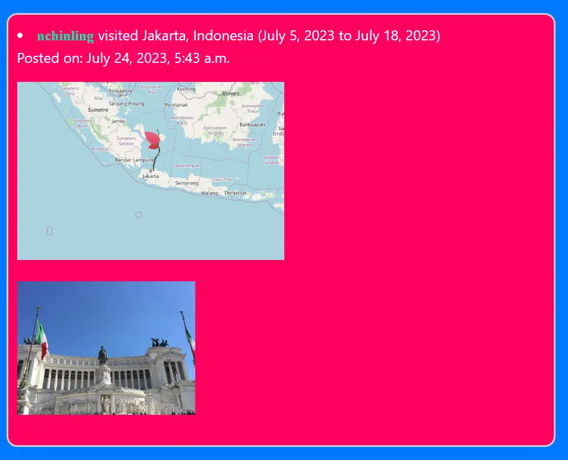
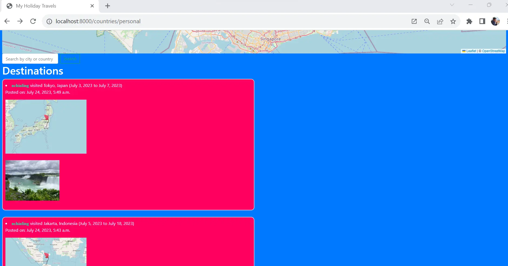

Holiday Journal is a platform that enables travel enthusiasts to embark on an unforgettable journey of memories and exploration. It enables users to cherish and share their most cherished moments from around the globe. They can journal, pin the map of countries or cities visited and upload photographs of their cherished moments.
It is built with Javascript, Python (Django framework), SQL, HTML and CSS. Javascript libraries like Lightbox.js is used to implement album-like functionalities while Leaflet.js is used to implement maps and countries/cities geo-tagging.
The video below describes and demonstrates the features of Holiday Journal.